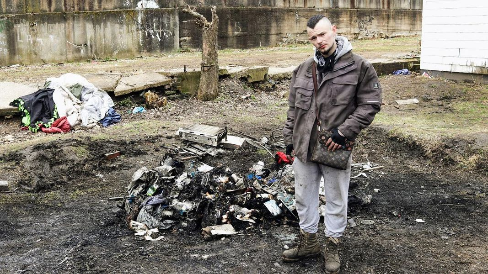

Timeline photos
I’m going to use Dustin as the person representing the topic I want to talk about today.
The topic is dangerous mentally ill homeless people.
Dustin is in prison for a whole mess of things. He stole a car, set it on fire, took his girlfriend hostage while threatening her with 2 guns. That’s just one night.
The word is that he is getting out in May. His dad, Lenny, recently died. I guarantee that it’s screwing with his head big time.
I’m going to tell you what is going to happen when he gets out.
He’s going to come back to the east side of Akron because he has nowhere to go. And he’s going to be great. He’ll be clear-headed. He will be hopeful about the future. Maybe he’ll even get a job and an apartment. It will look great. We will all be so happy for him.
And then he will slowly but surely slide right back into the life.
One time I picked him up in Dave’s Supermarket parking lot as he was raging with no one and ripping off all his clothes.
It’s one thing to be seriously mentally ill and homeless. It’s an entirely different thing when you are seriously mentally ill and homeless and dangerous.
Dustin isn’t our problem right now. There’s another guy that is roaming our neighborhood in this state right now. And honestly, he makes Dustin look like a Chihuahua. The guy we have on our hands right now is pure ripped pit bull.
There is no one to call. New Day Court that forces medication on people doesn’t come for these guys. They only target the easy cases.
It’s a total living nightmare.